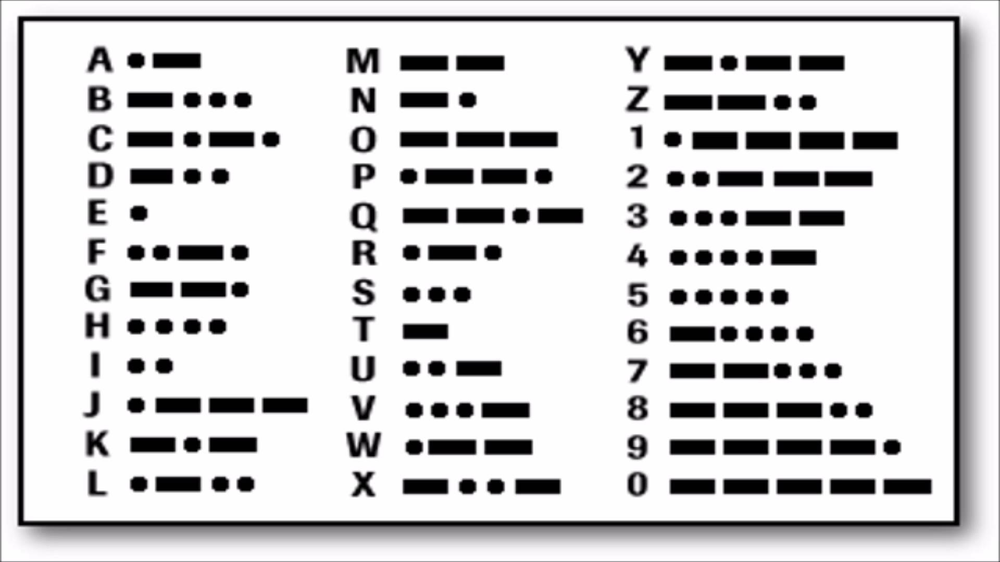

Morse code is a method of transmitting text information as a series of on-off tones, lights, or clicks that can be directly understood by a skilled listener or observer without special equipment. It is named for Samuel F. B. Morse, an inventor of the telegraph.
The International Morse Code encodes the ISO basic Latin alphabet, some extra Latin letters, the Arabic numerals and a small set of punctuation and procedural signals (prosigns) as standardized sequences of short and long signals called "dots" and "dashes" or "dots" and "dash", as in amateur radio practice. Because many non-English natural languages use more than the 26 Roman letters, extensions to the Morse alphabet exist for those languages.
Just type a sentence or phrase into the box below and then press the "Translate" button.
ROT13 or 'Rotate by 13 places' is a simple letter substitution cipher. The process of which ignores the first letter of each word and the following letters after it are replaced with the letter that appears 13 positions after it in the alphabet.
Because there are 26 letters (2×13) in the basic Latin alphabet, ROT13 is its own inverse; that is, to undo ROT13, the same algorithm is applied, so the same action can be used for encoding and decoding. The algorithm provides virtually no cryptographic security, and is often cited as a canonical example of weak encryption.
Just type a sentence or phrase in English or ROT13 into the box below.